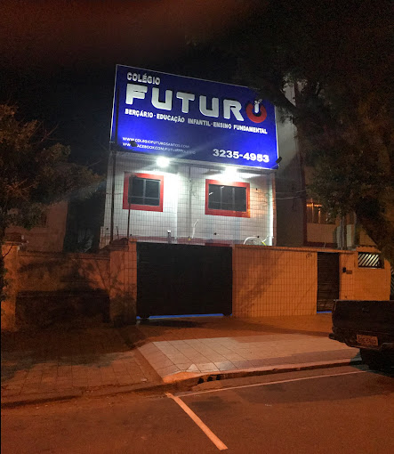
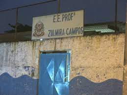

No 1°ano ao 5°ano do Ensino Fundamental estudei no Colégio Futuro em Santos. Uma escola particular em que eu tinha uma bolsa de 100%.
A partir do 6°ano do Ensino Fundamental, eu comecei estudar em escola pública, pois minha bolsa acabou no 5°ano.
A primeira escola pública que eu estudei foi o Zulmira em Santos, na qual eu estudei o inicio no 6°ano em 2019.
No 2? bimestre do 6° ano eu mudei de escola e fui para o Dr Paulo Filgueiras Jr, por causa que era mais perto de casa. Estudei nessa escola até 2022, ano que eu concluí o ensino Fundamental.